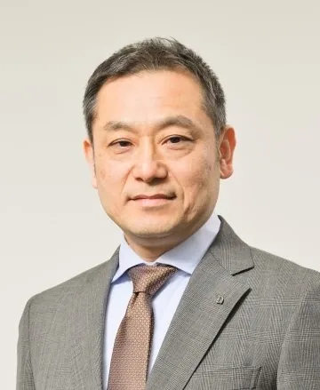
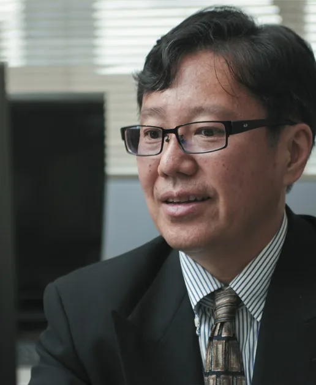
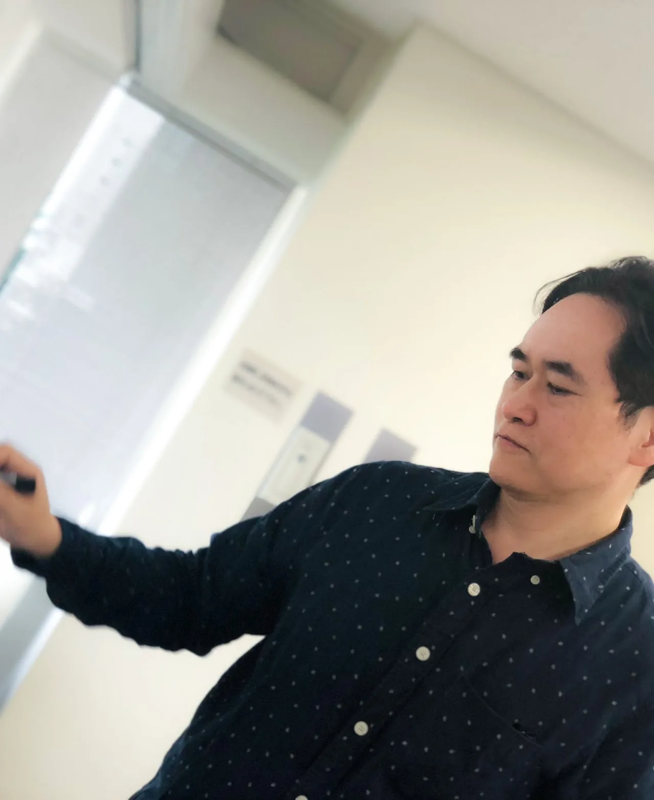
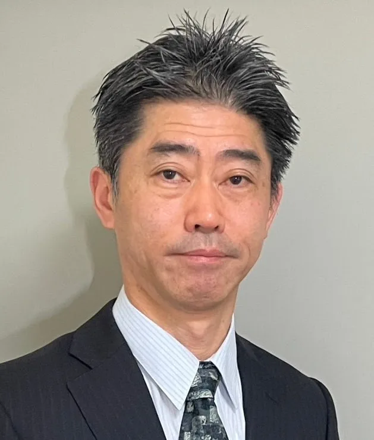

- Home
- About
- 企業情報
会社紹介
私たちは、数理最適化（Mathematical Optimization）と人工知能（Artificial Intelligence）を融合した技術「MOAI技術」を核とし、複雑化・高度化する社会課題に対して、迅速かつ高精度なソリューションを提供する技術集団です。
Mission
あらゆる意思決定の現場に、実効性のある最適化を
Vision
最適化とAIで、判断の質を底上げする社会へ
Value
スピード重視・成果重視・現場重視・生成AIネイティブ
代表挨拶
このたび、私たちは数理最適化と機械学習の融合技術を通じて産業界や社会の課題解決に貢献することを目指し、「株式会社MOAI Lab」を設立いたしました。
当社のメンバーは、オペレーションズ・リサーチの専門家として、長年にわたり当該分野およびその関連分野において学術研究を推進してきました。また、それらの成果を積極的に実務に活かし、ビジネス現場における効率化や最適化、意思決定支援を行ってきた実績があります。私たちは、この知見と経験を基盤とし、さらなる技術革新を進めることで、大規模化、複雑化する現代の課題に対し、より実践的で効果的なソリューションを提供してまいります。企業や社会の直面する課題を的確に分析し、最適な解決策を提案することで、持続可能な成長や効率的な資源活用を支援することが当社の使命です。
株式会社MOAI Labは、お客様の信頼に応えられるパートナーとして、数理的アプローチと最先端技術を活用し、ともに新たな可能性を開拓していきたいと考えています。
代表取締役 野々部 宏司
会社概要
- 社名
- 株式会社MOAI Lab
- 英文表記
- MOAI Lab Inc.
- 設立
- 2024年11月29日
- 資本金
- 18,500千円
- 所在地
- 〒135−0022 東京都江東区三好1-8-3 越前屋ビル 2F
Our Team

野々部 宏司
代表取締役 CEO
創業メンバー
法政大学教授
博士（情報学）京都大学
スケジューリング最適化ソルバー、制約最適化ソルバーの開発者。開発したアルゴリズムは大手の商用最適化ソルバーにも組み込まれている。企業との共同研究などで大規模実際最適化に対する課題の解決経験豊富。

久保 幹雄
取締役 CTO
創業メンバー
東京海洋大学教授
博士（工学）早稲田大学
Optimind アドバイザー、A* Quantum 取締役、株式会社Ridge-i技術アドバイザー。
最適化応用分野の第一人者で、数理最適化や機械学習などの数理手法を用いたサプライチェーン最適化の研究および応用においても第一線で活躍。大手企業の多数の最適化プロジェクトに30年以上にわたり技術提供を行っている。サプライチェーンや最適化に関する著書50冊以上。
小林 和博
取締役 CAIO
創業メンバー
青山学院大学准教授
博士（理学）東京科学大学
最適化技術の応用で大手メーカーや物流企業など複数の企業との共同研究実績あり。過去には大手企業でシステム開発、（国研）海上技術安全研究所において物流研究の国家プロジェクトに従事。

斎藤 努
取締役 CPO
創業メンバー
株式会社ビープラウド
トヨタ自動車株式会社
前職の株式会社構造計画研究所において長年最適化アルゴリズム開発の中核メンバーとして多くの実際問題を解決。現在、トヨタ自動車株式会社にて最適化プロジェクトに従事。
鄭 金花
取締役
創業メンバー
10年以上最適化関連コンサルティング業務に従事。複数の大規模最適化プロジェクト参加。４か国語に精通。
呉 偉
創業メンバー
静岡大学准教授
博士（情報科学）
学生時代に多数の学会賞を受賞。スケジューリング最適化、金融関連の最適化など多数の企業と共同研究。

土村 展之
創業メンバー
関西学院大学教育技術職掌 博士（工学）
京都大学卒。東京大学助教を経て現職。オープンソースソフト開発で活動。東京大学「戦略ソフトウェア創造人材養成プログラム」参加中に開発した、日本語pLaTeXの文字コード拡張（UTF-8対応）が広く普及。
アドバイザー
- 橋本 英樹
- 東京海洋大学
- 根岸 信太郎
- 神奈川大学